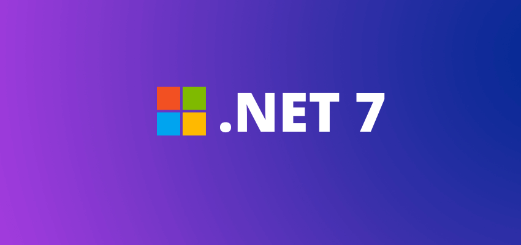
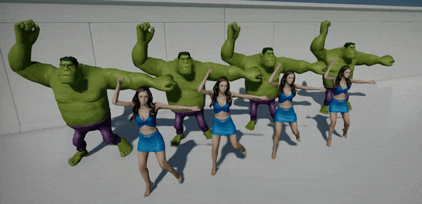

Flax 1.6 release notes
Highlights
.NET 7

We did it! Flax C# scripting runs now with the latest .NET 7 runtime and includes all the new and shiny features, such as:
- Better performance (new GC, new JIT, optimized stdlib)
- Latest C# 11 support
- Ability to use mixed native/managed debugger in VS 2022
- New Editor's code hot-reload via
AssemblyLoadContext(safer than our custom solution) - Seamless support for newer .Net versions in the future (eg. .NET 8/9)
- Smaller build size (due to new stdlibs stripping)
Now, Flax Editor requires .NET SDK 7 to be installed on a system - both Editor and Launcher detect it and will guide new users to install it (if not already). See Migration Guide section below to learn more about how this affects your game projects.
PhysX 5
Physics simulation engine was updated to the PhysX 5.1 (from 4.1) which includes exceptional stability and performance improvements as well as new GPU simulation features (that we plan on using in the future). We will add cloth and destruction support to the engine in upcoming months as in-built features to use in Flax games.
iOS Support
With iOS platform finally arriving in Flax we're proud to announce that Flax is truly a multi-platform engine. We support and maintain all common gaming platforms including desktop, consoles, and mobile.
Flax uses Vulkan via MoltenVK to render high-quality 3D graphics on iOS, together with full support for C++, C#, Visual Scripting, stereo audio, multi-touch input, high-dpi UI, single-click deployment, and much more.
We've updated all Flax Samples projects to support touch display input and run smoothly on iPhone/iPad devices. To learn more see the official documentation about iOS platform.
macOS arm64 Support

Flax 1.6 now works on arm64 Apple devices including macOS. M1/M2 chips offer stunning performance and thus Flax Editor and Flax Games have great stability.
Animation Retargeting

Animation Retargeting is a feature that allows playing the same animation on different skeletons. This can be useful when developing larger games where animations sharing helps reduce both development time and game build size. This update adds new tools for skeletons retargeting inside Editor. Also, Engine does a better job at reusing animations between skinned models. See docs to learn more.
| Before | After |
|---|---|
 |
 |
Any State in to Anim Graph
Any state is a special node that can define transitions to states that will be always checked during state machine updates. It can improve the workflow when creating more complex character animations (for example character Death state that can be triggered from all states).
Additionally, State Machine transitions can define Interruption options to support transition rule rechecking or instant transitions.
Audio improvements
Every Flax update brings new features and fixes into all engine areas. This time audio system got multiple quality improvements for better spatial sound playback and new HRTF audio. Audio sources can now control Pan, Doppler Factor, and Spatialization. We've fixed the minimum audio attenuation distance and added debug sphere to visualize it in Editor.
Network Replication Hierarchy
NetworkReplicationHierarchy is a new feature that allows the game to configure objects replication mechanism. It's an optional extension to NetworkReplicator accessible via Hierarchy property and can be set by game to a custom nodes hierarchy. It's used to store objects for replication in a more optimized structure (eg. grid or hierarchical tree) and it can be used to control the replication rate and target clients for each object individually.
For example, when a large game level contains 10k networked objects (eg. POIs) then replicating all of them to all connected clients would kill the performance. To solve this problem a simple replication hierarchy can be created that would control Replication FPS for each object and skip unnecessary replications for clients that are too far away. See docs to learn more.
Additionally, we've put lots of efforts into the networking system as we see many game projects in-developments that use it. Network RPCs codegen is more reliable and supports more features.
Migration Guide
From Mono to .NET 7
C# scripting runtime and tools have been updated to use the latest .NET 7 SDK on all platforms (both desktop, mobile, and consoles). It brings massive performance and stability benefits but might require some users to update their code and tools. Notable changes:
- Flax Editor doesn't contain C# runtime nor C# compiler anymore but depends on system-installed .NET SDK
- Desktop platforms (Windows, macOS, Linux) use CoreCLR runtime with new JIT and new GC
- Mobile and Consoles use new mono with Mono AOT (only Android uses Mono with JIT) but with the latest class library (feature compatible with CoreCLR)
- Visual Studio 2019 (and older) are unsupported by .NET 7 SDK (still can be used for programming but with less tooling)
- Flax.VS extension is not required anymore for C# debugging in Visual Studio - VS 2022 has inbuilt .NET 7 debugger
- Android platform requires Android .NET Workload installation via
dotnet workload install android - Old Mono runtime hosting code is still available in Flax codebase but is disabled and will be removed in future
- If you're using
Regexin your code then addoptions.ScriptingAPI.SystemReferences.Add("System.Text.RegularExpressions");toGame.Build.csto properly reference System Library (not used by default now)
We've updated docs, code examples, and all official plugins to reflect those changes.
Vehicles drive direction
Vehicles has been updated to use Z axis as forward instead of X which matches the engine coordinates system now. Engine will automatically rotate old vehicles around the origin to match the current layout (when loading old scene or prefabs). Hoverwer, please update any cars objects and driving scripts to properly work after the version upgrade.
Changelog
Version 1.6.6344 - 8 July 2023
Contributors: mafiesto4, GoaLitiuM, envision3d, Tryibion, Withaust, PrecisionRender, stefnotch, RuanLucasGD, Menotdan, Swiggies, MinhCT, PhyresiCompany, HydrogenC
PRs merged: 148
- Add .NET 7 support with C# 11 and the latest DotNet Runtime (new JIT and GC)
- Add
Platform.BuildTargetArchitectureto build tool - Add support for mixed scripts debugging in Visual Studio (both C++ and .Net Core)
- Add logging native exception stack trace on Windows when debugger is attached before going back to the crash location
- Add unit test to verify
LibraryImportattributes usage for proper bindings - Add PhysX 5
- Add Physics Statistics and profiler
- Add
FileSystem::GetDirectorySize - Add option Skip .NET Runtime Packaging to skip backing C# class library with cooked game (to use system-installed if possible)
- Add printing output C# files size in game cooker
- Add C# class library optimization for normal game builds (without AOT)
- Add multi-threading to AOT compilation (3x faster builds for Consoles and iOS)
- Add support for handling network events immediately in
NetworkLagDriverwhen Lag is set to zero - Add Any State to Anim Graph state machines
- Add Interruption options to State Machine transition
- Add skeleton node or bone copy context menu in Editor
- Add debug drawing selected skeleton node in Skinned Model window viewport
- Add skeleton nodes names debug drawing in Editor preview when enabled
- Add skeleton retargeting to play animations on different skeletons
- Add scale parameter to
DebugDrawtext drawing to rescale text without reducing font size - Add support for importing skeleton-only as Skinned Model (eg. from animation file to have skeleton for retargeting)
- Add support for macOS arm64 (M1/M2 chips)
- Add logging missing asset type on failed load
- Add
Output/folder to .gitignore - Add
TaskGraphSystem.RemoveDependencyand automatically cleanup dependencies on system destroy - Add better looking Anim Graph state machines nodes
- Add support for using
INetworkSerializableon custom structure in C++ for networking - Add support for spawning multiple objects over network within a single group that is not from Prefabs
- Add Network Replication Hierarchy for robust control over replication in multiplayer games
- Add network error log for missing network object when accessing ownership
- Add CPU profiler events to various networking functions
- Add network replication hierarchy system to Arizona Framework with settings and scripting features
- Add
NetworkReplicator::HasObject - Add network debugging panel to actors and scripts
- Add
INetworkObject::OnNetworkSync - Add default empty implementations to
INetworkObjectfor easier suage in game scripting - Add
SoftTypeReference<T>to scripting API for lazy-load type references (via typename) - Add input action phases
- Add
Camera.UnprojectPointmethod - Add play, pause, and stop functions to the Particle Effect
- Add better tooltips for assets in Content window
- Add better organization to the style groups of UI controls
- Add better UI for linking scale values in a transform more intuitive
- Add Pivot Relative UI Sizing to controls
- Add support for editing dictionary keys that are structures
- Add asset reload option via context menu in Editor
- Add search actors by parent tag (
Level.FindActorsByParentTag) - Add
FindActorby type and name (to actor and level) - Add
CustomArgsto compile and link environment in build tool for customization - Add preferring high-performance discrete GPUs when enumerating adapters
- Add
Utilities::HertzToTextvia newUtilities::UnitsToText - Add
LineCastandLineCastAllto physics scripting - Add default new script name to
MyScriptand avoid namign it asScriptto make it easier for use - Add
Platform::GetMousePosition/WindowsPlatform::SetMousePositionfor unified access to screen-space mouse position on all platforms - Add eyedropper color picker for Editor on Windows and Linux
- Add better usability when duplicating points of a spline
- Add various
Inputclass delegates to the C#/Visual scripting API - Add automated test for loading nested prefab with different root actor
- Add bitmap data slot of Font glyphs in
FontTextureAtlas - Add
Span<T>support for scripting fields - Add
Span<T>to C++ debugger natvis file - Add HRTF Audio support (via
OpenALbackend) - Add updating the main menu shortcut keys on editor options save
- Add Copy Euler angles to Quaternion editor context menu
- Add logging
PixelFormatas string instead of integer value for better readability - Add
ClampLengthfunctions to C++Vector3 - Add InputBindings modifiable from plugin (in Editor public API)
- Add word wrapping on capital letters and underscores for better text rendering
- Add various changes to scroll bar to make it feel better
- Add de-selecting items in content view by clicking empty space in Editor
- Add the play icon to a stop icon and vice versa when clicked for the Profiler
- Add
Create collision dataaction to be performed for each model selected in the Content Window - Add improvements for Visject context menu interface in Editor
- Add ability to change the fps of the not focused editor window
- Add setting new material instance name to parent material name
- Add
EnumAddFlagsfor easy flags appending - Add
NetworkReplicator::EnableLogto optionally enable verbose logging of networking - Add
NetworkStream::SenderIdto detect message sender during object replication or RPC code - Add
NetworkManager::GetClientbyuint32 clientId - Add
NetworkRpcParamsfor sending RPC to specific set of clients or to read sender id - Add array property replication code-gen for C# networking
- Add networking replication codegen for C# array properties with object references or custom structures
- Add LateFixedUpdate event for scripts
- Add support for decimal values in
Fontsizes - Add proper POD types check in C# network replication codegen
- Add support for C# array as network RPC method parameter
- Add objects ID inverse mapping from client to server for proper C# networking codegen
- Add optional replication for network object (if Rep FPS is negative)
- Add support for changing C# nullable references context build option
- Add Content importers and exporters for scripting API
- Add more usability to model/material previews in Editor
- Add option to search only active actor with
Tag - Add output binaries folder cleanp to build clear command
- Add support for writing UTF-8 files in
FileBase::WriteAllText - Add ability to unset type reference with
nullitem - Add
SpanContainsutility to C++ scripting - Add
ReallocAlignedutility - Add support for line-breaks in
API_INJECT_CODEmacro - Add
eol=lfto gitattribute - Add removing old hot-reload files in project references on Editor startup
- Add better visuals of dragging a tree node
- Add
Unload all but this sceneto Editor scene tree context menu - Add using parent actor's name as initial prefab name in Editor
- Add
MoveTowardsfunctions to C++ Math - Add
Tags::GetSubTagsto scripting api - Add
ViewportIconsRenderer::AddActorWithTexturefor custom actor icon per-actor - Add inputs to Random Range nodes in particle emitter surface
- Add
==operator for Actors and Scripts to properly perform comparison in C# scripts - Add
AudioDataInfo.Length - Add audio clip preview refresh on asset reimport in Editor
- Add current playback position preview with seeking functionality to Audio Clip window in Editor
- Add OpenAL
AL_SOFT_source_spatializeextension support for stereo spatial audio playback - Add
AllowSpatializationoption to Audio Source - Add
DopplerFactorto Audio Source - Add
Panto Audio Source for stereo panning - Add editor playback utilities for Audio Source and Scene Animation Player
- Add saving and re-opening all active scenes between editor sessions
- Add ensuring prefab actors static flags match parent flags or keeps it's own
- Add logging .NET runtime version to build tool
- Add ignoring logging missing env var on Windows
- Add engine version defines for build scripts (eg.
FLAX_1_6_OR_NEWER) - Add automated test for strings formatting and localization
- Add content proxy modifications function and workspace rebuilding for custom asset types extensions
- Add build tool and game cooker caches clearing when opening project with different Editor version
- Add GC to run periodically in order to reduce stuttering
- Add
launchSettings.jsongeneration for Visual Studio 2022 with .NET 7 - Add better Texture initialization API with custom data
- Add better Visual Studio solution generation with nested C# project cross-references to properly place projects in group folders
- Improve Root Motion extraction and playback
- Improve automatic slider speed for float value fields in Editor
- Optimize
Flax.Buildperformance to have even faster builds - Optimize bindings code generation via String Builder pooling
- Optimize text formatting in various places
- Optimzie
Newtonsoft.Jsonlib by removing Xml, Schema support and making it AOT-friendly for AOT game builds - Optimize out
System.ComponentModel.TypeConverterassembly usage to reduce cooked game builds - Optimize profiler window assets and GPU resources sorting when the view is active only
- Optimize network replication when no client can receive object
- Optimize interface method lookup to eliminate
strlencalls - Optimize vectors normalization
- Optimize UI performance when destroying complex UI structures
- Optimize
Utils.InitStructureusage in generated bindings code if structure can be zero-inited - Optimize
CollisionsHelper::FrustumContainsBox - Optimize out debug symbols generation for C# stdlib in Mono AOT builds
- Update Newtonsoft.Json to
13.0.2 - Update Nintendo SDK support to
16.1 - Update OpenAL version to
1.23.1 - Update dependant DotNet libraries to
dotnet7 - Update deprecated
WebClientintoHttpClientinFlax.Buildfiles download utility - Update
fmtllibrary to version9.1(Aug 27, 2022) - Update Editor analytics from deprecated
Universal Analyticsto the latestGA4 - Update Tracy to the version
0.9 - Update Flax
.gitignoreto skip generated code module header files - Changed Flax Docs license to
CC-BY-4.0 license - Remove mono debugger from VS Code extensions list
- Remove shadows casting and sdf data from editor camera model
- Remove unused
Function::TryCall - Remove extra sleep when Editor is not focused
- Remove
EnableAdaptiveForcefrom Physics settings (deprecated functionality in PhysX) - Rename networking codegen initializer to
NetworkingPluginfor C# netcode - Refactor vehicles to use
Zaxis as forward instead ofX - Refactor platform process startup with
CreateProcessSettings - Refactor Editor Windows layout serialization of splitter values to prevent invalid state when loading windows
- Refactor Skeleton Mapping to be handled by Skinned Model instead of Animation asset
- Refactor
StringUtilsto simplify code - Refactor various Editor APIs to use auto-generated bindings instead of manual code
- Refactor widowing on macOS to support screen scale and HighDpi mode
- Refactor
RootMotionDataintoTransformto simplify code - Refactor
Levelclass to unload scenes in reversed order - Refactor 3d audio with better spatial sound quality
- Refactor Network RPC C# codegen to share code with data serializer
- Fix Anim Graph state machine rule graph opening after transition removal undo
- Fix actors spawning in prefab editor
- Fix bug in
StringUtils::PathRemoveRelativePartswhen going up to the Windows drive with relative path bits - Fix deprecation compile warning in
NetworkConfigon Clang - Fix API code injection lines to be excluded from includes cache
- Fix warning on
Asset::WaitForLoadedwhen loading failed before - Fix AnimatedModel bounds calculations
- Fix bug with path name preventing the item to be renamed when duplicated
- Fix content window auto scrolling regression
- Fix debug draw lines to not use fake-lighting like debug draw surfaces
- Fix
Array For Eachvisual script node local vars setup - Fix OpenAL spatial audio bugs with left/right and front/back being reversed
- Fix error when using nested Visject Surface context during State Machines editing in Anim Graph
- Fix Json asset cooking to properly serialize whole asset data even if modified at runtime
- Fix collision data cooking from model asset by favoring CPU data fetching
- Fix missing Generic Json Proxy not showing up in the content context menu
- Fix codegen for C# networking when using custom structures for replication and RPCs
- Fix mouse cursor restoring from hidden state on macOS
- Fix window focus notification handling on macOS
- Fix dylib rpath id on macOS
- Fix visuals of
Blend with Masknode in Anim Graph - Fix visuals of the spline tangent points in Editor
- Fix Visual Studio Code jump to line argument
- Fix scene asset runtime contents when saving scene file in Editor
- Fix C# serialization of scene objects when property throws and exception
- Fix C# math sign function for value
0 - Fix C#
Math.Remapmethod as obsolete (use `Math.Map instead) - Fix C++ API for Vector2/3 Normalization to be the same as in C# API
- Fix
ViewportIconsRendererusage in game C++ scripts - Fix
TextureMipData::GetPixelsto properly copy pixels of the same format - Fix memory leak when exporting
pngtexture viastb - Fix issues when drag and dropiing actor tree in Editor
- Fix
LayersMatrixEditorwith many layers in use - Fix right-click menu deletion to take selection into account in Content Window
- Fix content view items refresh (eg. after delete) when using search field
- Fix Visual Studio project names collision when using both C++ and C# scripting
- Fix C# serialization of reference to self (eg. script sub-object referencing owning script)
- Fix sluggish Editor Viewport camera movement with high DPI
- Fix
GridGizmoto render before transparency in Editor viewport - Fix invalid ability to rename Source/Content folders on content editor
- Fix custom editor window restore after hot-reload
- Fix incorrect space conversion results in
AnimatedModel.SetCurrentPose - Fix vehicle wheel debug orientation
- Fix missing collision events generated during
CharacterController::Move - Fix compile-time error in
HashSet::ClearDelete - Fix codegen for C++ RPS with Array param
- Fix garbage
DefaultScenevalue in new project - Fix Intellisense errors with referenced binary module structures
- Fix invoking Client RPC on Host client when it's not included in
targetIdslist - Fix
StringUtils::ConvertANSI2UTF16to properly handle multi-byte characters length - Fix bug when using material instance of material that uses
GlobalSDF - Fix bug of the collection size changing while sliding the size number in Editor
- Fix bug with not deleting all children on folder delete
- Fix bug with automatic collision assets creation in non-asset folders
- Fix missing initial audio source volume setup for XAudio2
- Fix network RPC object id mapping back to server id when sent from client
- Fix
NetworkTransforminvalid fields sync copy-paste typos - Fix creating localization table on blank project
- Fix bindings generation for in-built
Chartype used inArray - Fix model screen size calculation in orthographic view projections
- Fix CPU profiler events extraction when buffer is full
- Fix bindings code instance object param
objto__objto prevent name collisions - Fix existing nested prefabs sync applying when updating base prefab changes
- Fix spawning nested prefab with different root actor
- Fix accessing object ownership info locally before object gets fully spawned
- Fix character controller up direction limit between
(-1, 1) - Fix typo in atmosphere precompute shader
- Fix scale link to use ratio when editing transform
- Fix hierarchical network ownership propagation to sub-objects
- Fix
NetworkManager::ClientConnecteddispatch after network state is changed to online for local client - Fix
UIControllinkage to Prefab window when creating UI within prefab Editor - Fix UI Control selection highlights when using Canvas Scaler
- Fix 3D UI Canvas point conversion from parent control space to local space
- Fix syncing Custom Editor value when using it to edit value-type
- Fix spawning nested prefab with different root actor
- Fix prefab diff context menu in Editor to properly diff against arrays
- Fix prefab data build number when loading objects from prefab
- Fix Scale Transform Gizmo issue when enabling Scale Snap
- Fix looping animation in Anim Graph when using start position offset
- Fix creating C# scripts in Editor with private
ctormethod - Fix textbox submit when it's nav focused
- Fix file lock when loading asset fails
- Fix error when unloading Visual Script item in Editor
- Fix using proper default value in scripting bindings for
IntPtrvalue type - Fix prefab files copying using
Ctrl+C/Ctrl+Vin editor content - Fix RPC invoking on object with different ID but matching parent and type
- Fix
BitArray::Setto not beconst - Fix output log text ranges to handle line ending
- Fix crash due to internal errors when drawing asset thumbnails in Editor
- Fix crash on engine exit when asset fails to load due to serialized version mismatch
- Fix crash when substring of
Stringis assigned to itself - Fix crash when importing model with a LOG Generation but a single LOD specified only
- Fix crash when sampling animation in Anim Graph that uses it's length to calculate start position
- Fix crash when C# type has missing empty
ctoror it throws an exception - Fix crash in GPU devices init when system has no valid GPU driver installed
- Fix crash when loading scene with script which type is not a scene object
- Fix crash on end play when one of the actors has been manually disabled
- Fix crash when reimporting audio clip while it's being played
- Fix crash when updating GPU texture residency to
0 - Fix crash when using multiple audio clips streaming with XAudio2 backend
- Fix crash when starting drag&drop with invalid control state (detached from window)
- Fix crash during hot-reload when using custom assets from game code
- Fix crash due to invalid RPC codegen for enum value type variable
- Fix crash on hot-reload when using custom assets
- Fix crash when modifying animated model skeleton pose from gameplay code during update event
- Fix crash due to replicated objects leak upon system destruction
- Fix crash when window gets deleted before show/close sequence